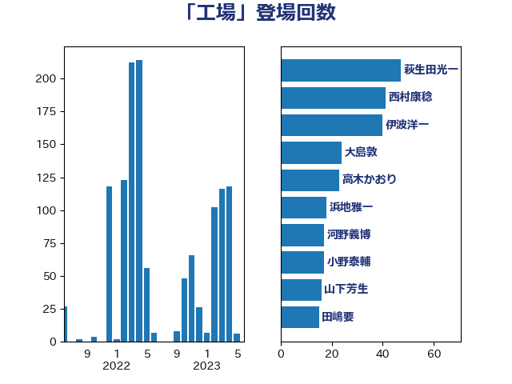

単語「工場」

| 萩生田光一 | 自由民主党 | 47 回 |
| 西村康稔 | 自由民主党 | 41 回 |
| 伊波洋一 | 無所属 | 40 回 |
| 大島敦 | 立憲民主党 | 24 回 |
| 高木かおり | 日本維新の会 | 23 回 |
| 浜地雅一 | 公明党 | 18 回 |
| 河野義博 | 公明党 | 17 回 |
| 小野泰輔 | 日本維新の会 | 17 回 |
| 山下芳生 | 日本共産党 | 16 回 |
| 田嶋要 | 立憲民主党 | 15 回 |
| 空本誠喜 | 日本維新の会 | 14 回 |
| 野間健 | 立憲民主党 | 13 回 |
| 西田実仁 | 公明党 | 12 回 |
| 笠井亮 | 日本共産党 | 12 回 |
| 岸田文雄 | 自由民主党 | 12 回 |
| 岩渕友 | 日本共産党 | 12 回 |
| 鈴木義弘 | 国民民主党 | 11 回 |
| 鈴木敦 | 国民民主党 | 11 回 |
| 逢坂誠二 | 立憲民主党 | 11 回 |
| 西銘恒三郎 | 自由民主党 | 11 回 |
| 芳賀道也 | 国民民主党 | 11 回 |
| 金城泰邦 | 公明党 | 10 回 |
| 田村まみ | 国民民主党 | 10 回 |
| 國場幸之助 | 自由民主党 | 10 回 |
| 中野洋昌 | 公明党 | 10 回 |
| 高橋千鶴子 | 日本共産党 | 9 回 |
| 荒井優 | 立憲民主党 | 9 回 |
| 西野太亮 | 自由民主党 | 8 回 |
| 紙智子 | 日本共産党 | 8 回 |
| 礒崎哲史 | 国民民主党 | 8 回 |
| 田村貴昭 | 日本共産党 | 8 回 |
| 小山展弘 | 立憲民主党 | 8 回 |
| 猪瀬直樹 | 日本維新の会 | 7 回 |
| 武部新 | 自由民主党 | 7 回 |
| 本田顕子 | 自由民主党 | 7 回 |
| 山崎誠 | 立憲民主党 | 7 回 |
| 長友慎治 | 国民民主党 | 6 回 |
| 森田俊和 | 立憲民主党 | 6 回 |
| 川合孝典 | 国民民主党 | 6 回 |
| 大塚耕平 | 国民民主党 | 6 回 |
| 古賀之士 | 立憲民主党 | 6 回 |
| 亀岡偉民 | 自由民主党 | 6 回 |
| 関芳弘 | 自由民主党 | 5 回 |
| 西村明宏 | 自由民主党 | 5 回 |
| 福島みずほ | 社会民主党 | 5 回 |
| 玉木雄一郎 | 国民民主党 | 5 回 |
| 日下正喜 | 公明党 | 5 回 |
| 打越さく良 | 立憲民主党 | 5 回 |
| 徳永エリ | 立憲民主党 | 5 回 |
| 平林晃 | 公明党 | 5 回 |
| 宮本徹 | 日本共産党 | 5 回 |
| 前川清成 | 日本維新の会 | 5 回 |
| 西岡秀子 | 国民民主党 | 4 回 |
| 米山隆一 | 立憲民主党 | 4 回 |
| 福島伸享 | 無所属 | 4 回 |
| 石井章 | 日本維新の会 | 4 回 |
| 河西宏一 | 公明党 | 4 回 |
| 櫻井周 | 立憲民主党 | 4 回 |
| 森本真治 | 立憲民主党 | 4 回 |
| 斉藤鉄夫 | 公明党 | 4 回 |
| 市村浩一郎 | 日本維新の会 | 4 回 |
| 岸真紀子 | 立憲民主党 | 4 回 |
| 大西健介 | 立憲民主党 | 4 回 |
| 大石あきこ | れいわ新選組 | 4 回 |
| 大島九州男 | れいわ新選組 | 4 回 |
| 伊藤渉 | 公明党 | 4 回 |
| 青柳仁士 | 日本維新の会 | 3 回 |
| 長坂康正 | 自由民主党 | 3 回 |
| 野村哲郎 | 自由民主党 | 3 回 |
| 野中厚 | 自由民主党 | 3 回 |
| 道下大樹 | 立憲民主党 | 3 回 |
| 緑川貴士 | 立憲民主党 | 3 回 |
| 篠原豪 | 立憲民主党 | 3 回 |
| 片山さつき | 自由民主党 | 3 回 |
| 渡辺周 | 立憲民主党 | 3 回 |
| 浜口誠 | 国民民主党 | 3 回 |
| 泉田裕彦 | 自由民主党 | 3 回 |
| 櫻井充 | 自由民主党 | 3 回 |
| 櫛渕万里 | れいわ新選組 | 3 回 |
| 榛葉賀津也 | 国民民主党 | 3 回 |
| 森屋隆 | 立憲民主党 | 3 回 |
| 東徹 | 日本維新の会 | 3 回 |
| 木村英子 | れいわ新選組 | 3 回 |
| 川崎ひでと | 自由民主党 | 3 回 |
| 山岡達丸 | 立憲民主党 | 3 回 |
| 山口壯 | 自由民主党 | 3 回 |
| 小沼巧 | 立憲民主党 | 3 回 |
| 小林鷹之 | 自由民主党 | 3 回 |
| 中田宏 | 自由民主党 | 3 回 |
| 三宅伸吾 | 自由民主党 | 3 回 |
| 齋藤健 | 自由民主党 | 2 回 |
| 馬場伸幸 | 日本維新の会 | 2 回 |
| 須藤元気 | 無所属 | 2 回 |
| 青山繁晴 | 自由民主党 | 2 回 |
| 鈴木庸介 | 立憲民主党 | 2 回 |
| 鈴木俊一 | 自由民主党 | 2 回 |
| 野田聖子 | 自由民主党 | 2 回 |
| 藤井比早之 | 自由民主党 | 2 回 |
| 若松謙維 | 公明党 | 2 回 |
| 篠原孝 | 立憲民主党 | 2 回 |
| 竹谷とし子 | 公明党 | 2 回 |
| 竹詰仁 | 国民民主党 | 2 回 |
| 石川香織 | 立憲民主党 | 2 回 |
| 石原正敬 | 自由民主党 | 2 回 |
| 石井苗子 | 日本維新の会 | 2 回 |
| 石井正弘 | 自由民主党 | 2 回 |
| 白石洋一 | 立憲民主党 | 2 回 |
| 田村智子 | 日本共産党 | 2 回 |
| 田名部匡代 | 立憲民主党 | 2 回 |
| 渡辺孝一 | 自由民主党 | 2 回 |
| 渡辺博道 | 自由民主党 | 2 回 |
| 浜田聡 | NHK党 | 2 回 |
| 泉健太 | 立憲民主党 | 2 回 |
| 池畑浩太朗 | 日本維新の会 | 2 回 |
| 梅谷守 | 立憲民主党 | 2 回 |
| 柴田巧 | 日本維新の会 | 2 回 |
| 松本洋平 | 自由民主党 | 2 回 |
| 杉尾秀哉 | 立憲民主党 | 2 回 |
| 末松信介 | 自由民主党 | 2 回 |
| 後藤茂之 | 自由民主党 | 2 回 |
| 岩本剛人 | 自由民主党 | 2 回 |
| 山添拓 | 日本共産党 | 2 回 |
| 山本佐知子 | 自由民主党 | 2 回 |
| 山口晋 | 自由民主党 | 2 回 |
| 小寺裕雄 | 自由民主党 | 2 回 |
| 宮崎雅夫 | 自由民主党 | 2 回 |
| 宮崎勝 | 公明党 | 2 回 |
| 大家敏志 | 自由民主党 | 2 回 |
| 塩川鉄也 | 日本共産党 | 2 回 |
| 堀場幸子 | 日本維新の会 | 2 回 |
| 土田慎 | 自由民主党 | 2 回 |
| 古屋範子 | 公明党 | 2 回 |
| 伊藤孝恵 | 国民民主党 | 2 回 |
| 井原巧 | 自由民主党 | 2 回 |
| 丸川珠代 | 自由民主党 | 2 回 |
| 上杉謙太郎 | 自由民主党 | 2 回 |
| ながえ孝子 | 無所属 | 2 回 |
| 高木真理 | 立憲民主党 | 1 回 |
| 高市早苗 | 自由民主党 | 1 回 |
| 馬淵澄夫 | 立憲民主党 | 1 回 |
| 馬場雄基 | 立憲民主党 | 1 回 |
| 青木愛 | 立憲民主党 | 1 回 |
| 阿達雅志 | 自由民主党 | 1 回 |
| 長島昭久 | 自由民主党 | 1 回 |
| 金子道仁 | 日本維新の会 | 1 回 |
| 野上浩太郎 | 自由民主党 | 1 回 |
| 里見隆治 | 公明党 | 1 回 |
| 遠藤良太 | 日本維新の会 | 1 回 |
| 輿水恵一 | 公明党 | 1 回 |
| 足立敏之 | 自由民主党 | 1 回 |
| 西田昌司 | 自由民主党 | 1 回 |
| 藤巻健太 | 日本維新の会 | 1 回 |
| 落合貴之 | 立憲民主党 | 1 回 |
| 羽田次郎 | 立憲民主党 | 1 回 |
| 緒方林太郎 | 無所属 | 1 回 |
| 稲津久 | 公明党 | 1 回 |
| 秋野公造 | 公明党 | 1 回 |
| 秋葉賢也 | 自由民主党 | 1 回 |
| 福重隆浩 | 公明党 | 1 回 |
| 福山哲郎 | 立憲民主党 | 1 回 |
| 神谷裕 | 立憲民主党 | 1 回 |
| 神田潤一 | 自由民主党 | 1 回 |
| 神津たけし | 立憲民主党 | 1 回 |
| 石橋通宏 | 立憲民主党 | 1 回 |
| 石川昭政 | 自由民主党 | 1 回 |
| 石川博崇 | 公明党 | 1 回 |
| 石井拓 | 自由民主党 | 1 回 |
| 矢倉克夫 | 公明党 | 1 回 |
| 田島麻衣子 | 立憲民主党 | 1 回 |
| 田中健 | 国民民主党 | 1 回 |
| 片山大介 | 日本維新の会 | 1 回 |
| 熊谷裕人 | 立憲民主党 | 1 回 |
| 浅野哲 | 国民民主党 | 1 回 |
| 浅田均 | 日本維新の会 | 1 回 |
| 浅川義治 | 日本維新の会 | 1 回 |
| 河野太郎 | 自由民主党 | 1 回 |
| 沢田良 | 日本維新の会 | 1 回 |
| 池田佳隆 | 自由民主党 | 1 回 |
| 江藤拓 | 自由民主党 | 1 回 |
| 水野素子 | 立憲民主党 | 1 回 |
| 森屋宏 | 自由民主党 | 1 回 |
| 森まさこ | 自由民主党 | 1 回 |
| 梶山弘志 | 自由民主党 | 1 回 |
| 梅村みずほ | 日本維新の会 | 1 回 |
| 柳ヶ瀬裕文 | 日本維新の会 | 1 回 |
| 松原仁 | 立憲民主党 | 1 回 |
| 村田享子 | 立憲民主党 | 1 回 |
| 杉本和巳 | 日本維新の会 | 1 回 |
| 本庄知史 | 立憲民主党 | 1 回 |
| 末次精一 | 立憲民主党 | 1 回 |
| 末松義規 | 立憲民主党 | 1 回 |
| 早稲田ゆき | 立憲民主党 | 1 回 |
| 新妻秀規 | 公明党 | 1 回 |
| 斎藤アレックス | 国民民主党 | 1 回 |
| 庄子賢一 | 公明党 | 1 回 |
| 平沼正二郎 | 自由民主党 | 1 回 |
| 平山佐知子 | 無所属 | 1 回 |
| 川田龍平 | 立憲民主党 | 1 回 |
| 岩田和親 | 自由民主党 | 1 回 |
| 山田美樹 | 自由民主党 | 1 回 |
| 山田勝彦 | 立憲民主党 | 1 回 |
| 山本博司 | 公明党 | 1 回 |
| 小里泰弘 | 自由民主党 | 1 回 |
| 小泉進次郎 | 自由民主党 | 1 回 |
| 小島敏文 | 自由民主党 | 1 回 |
| 小倉將信 | 自由民主党 | 1 回 |
| 寺田静 | 無所属 | 1 回 |
| 宮本周司 | 自由民主党 | 1 回 |
| 宮崎政久 | 自由民主党 | 1 回 |
| 宮口治子 | 立憲民主党 | 1 回 |
| 宗清皇一 | 自由民主党 | 1 回 |
| 太田房江 | 自由民主党 | 1 回 |
| 大野敬太郎 | 自由民主党 | 1 回 |
| 大口善徳 | 公明党 | 1 回 |
| 堤かなめ | 立憲民主党 | 1 回 |
| 国光あやの | 自由民主党 | 1 回 |
| 嘉田由紀子 | 無所属 | 1 回 |
| 吉良よし子 | 日本共産党 | 1 回 |
| 吉田統彦 | 立憲民主党 | 1 回 |
| 吉田宣弘 | 公明党 | 1 回 |
| 吉田はるみ | 立憲民主党 | 1 回 |
| 吉川赳 | 無所属 | 1 回 |
| 前原誠司 | 国民民主党 | 1 回 |
| 冨樫博之 | 自由民主党 | 1 回 |
| 倉林明子 | 日本共産党 | 1 回 |
| 仁木博文 | 無所属 | 1 回 |
| 井上哲士 | 日本共産党 | 1 回 |
| 中西祐介 | 自由民主党 | 1 回 |
| 中川貴元 | 自由民主党 | 1 回 |
| 中川正春 | 立憲民主党 | 1 回 |
| 中川宏昌 | 公明党 | 1 回 |
| 下野六太 | 公明党 | 1 回 |
| 下条みつ | 立憲民主党 | 1 回 |
| 上田清司 | 国民民主党 | 1 回 |
| おおつき紅葉 | 立憲民主党 | 1 回 |